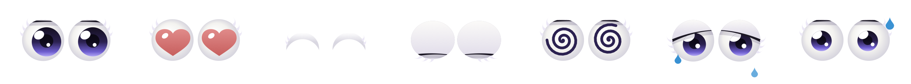
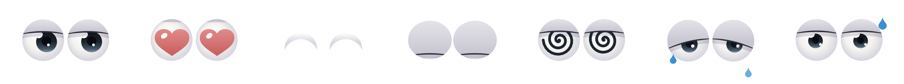

Madam
Big violet eyes, a flick of liner, curled lashes. Never quite still. Calls you darling.

A pair of eyes that keeps you company, and keeps an eye on you: look away now and then, get up and walk, go to bed.
Roomie is for Macs. Send it to yours.
You pick one. Two would only argue.
Big violet eyes, a flick of liner, curled lashes. Never quite still. Calls you darling.

Slate eyes under heavy lids, slow looks, perfect manners. Moves his eyes only for something worth it.

They hop out of the menu bar into the notch, and a black card opens with their line. Answer, or let it be: it slips away, and they ask again later.
Every twenty minutes at the screen, they ask you to look at something far away for twenty seconds, and they count; a soft chime tells you when. Every half hour in the chair, a five-minute walk. Past half past midnight, bed.
Say you'll walk and stay put, and they will notice.
There is more. You'll find it.
Two minutes, once. The same steps are in the zip, as “How to install.txt”.
could not verifyit. Press Done. Roomie has no network code at all, so nothing leaves your Mac.
Don't see them? On a full menu bar, macOS hides icons behind the notch. Quit an app you don't need there, and they will appear.
The clock. How long since you last touched the Mac. Where the pointer is. That a mouse click happened, not where and not on what. The battery level. How hot the Mac is running. Whether the microphone is in use, so they keep quiet on calls; never what it hears. Whether the front window fills the screen.
Nothing on your screen and nothing you type. There is no network code at all, so nothing leaves your Mac, and macOS never asks you for a permission, because none is needed.
On a call or watching something full screen, they keep quiet. For an hour of peace, right-click the eyes: Quiet for an Hour. For fewer nudges for good, or none at all: Nudges, then Only Walks and Bed or None, Just Company.
If you turned on Open at Login, right-click the eyes and turn it off. Then choose Quit Roomie and drag Roomie from Applications to the Trash.
The only thing they remember is who lives here.